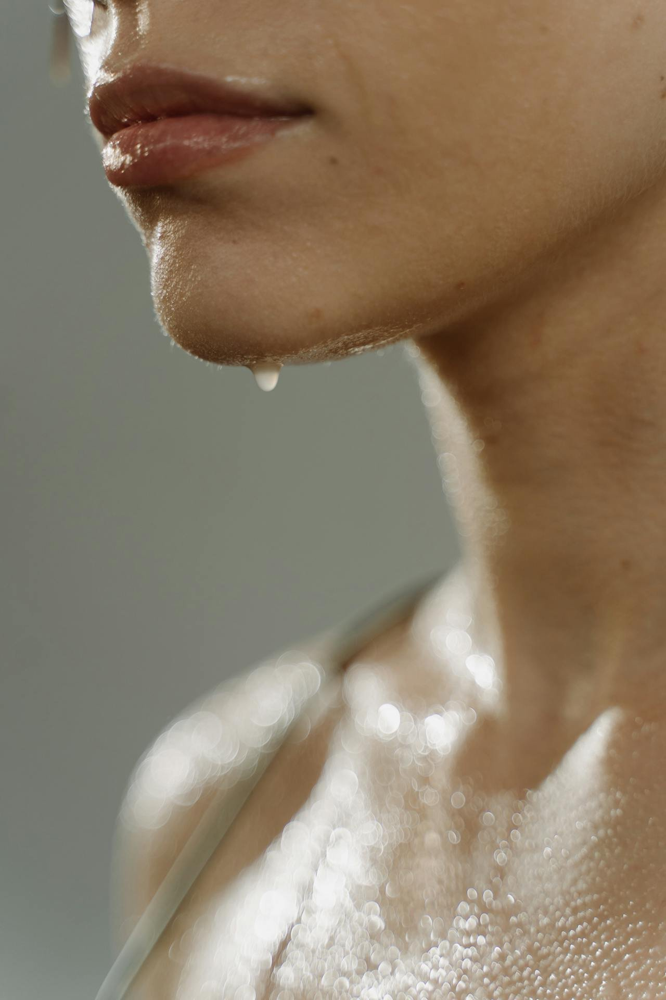

The Ultimate Gym Skincare Routine (2025 Guide)

Hadiyah Daché, licensed esthetician
Health • Skin Care
3 min
← All articlesThe Book →Glowdega experiences its busiest times from late January to early February, a surge linked to new gym memberships. Our new clients come to us looking for ways to prevent workout breakouts. Gym culture, with its pre-workouts, protein shakes, diet changes, and, of course, sweating, often leads to skin breakouts. But let this post serve as your comprehensive guide to maintaining healthy skin before, during, and after workouts. Learn how to prevent gym-related acne and maintain a glowing complexion while pursuing your fitness goals.
Understanding Gym-Related Skin Changes
Physical activity affects your skin in multiple ways. The most immediate impact comes from increased sweating, which can lead to clogged pores if not properly managed. For those who enjoy outdoor workouts, environmental exposure adds another layer of complexity, potentially causing both sun damage and pollution-related stress on the skin. Exercise also triggers hormonal changes that can affect oil production, sometimes leading to unexpected breakouts or dry patches. During intense training sessions, your skin loses moisture at an accelerated rate, and the physical activity generates free radicals that can impact skin health.
Essential Pre-Workout Skincare Steps
Before you get started, you might want to make sure you’re not contributing to your breakouts unknowingly. Many pre-workout powder and protein shakes can contain high amounts of known acne triggers. Download our ebook for a complete list of acne-safe protein and supplements here.
Starting your workout with properly prepared skin is crucial for preventing irritation and breakouts. The foundation of any pre-gym skincare protocol begins with gentle cleansing. It's essential to remove all makeup, debris, and skincare products that might interact with sweat. A gentle, non-stripping cleanser like Calming Cleanse prepares your skin without compromising its natural barrier.
Many people skip moisturizing before exercise, thinking it's unnecessary since they'll be sweating soon. However, hydrating your skin before a workout is crucial for maintaining skin health. Proper hydration improves skin elasticity and strengthens the barrier function, preventing excessive dehydration during workouts. Consider using pure aloe vera gel (if you're not allergic) or a lightweight, non-comedogenic moisturizer. Oil-free hydrating serums can also provide excellent pre-workout hydration without feeling heavy on the skin.
For daytime workouts, sun protection becomes an essential final step. Choose a stick SPF formula to prevent eye irritation from sweat, especially if you're planning outdoor activities. Water-resistant sunscreen with at least SPF 30 provides necessary protection without compromising your workout comfort.
Post-Workout Skincare Strategies
Your post-exercise routine should adapt to your workout timing and daily schedule. For those who exercise mid-day and head back to work or school, keeping a minimal but effective skincare kit is essential. A travel-size gentle cleanser, pre-soaked toner pads, and a broad-spectrum SPF moisturizer can fit easily in most bags and provide adequate care. If you have access to shower facilities, consider using a salicylic or mandelic acid body wash, followed by an antioxidant serum and hydrating moisturizer for both face and body.
Evening workout enthusiasts have the advantage of incorporating their post-workout skincare into their regular nighttime routine. This typically involves a thorough double cleanse to remove sweat and debris, followed by active ingredients and treatments, sealed with a nourishing night cream.
We recommend keeping hypochlorous acid wipes in your gym bag to wipe away sweat if you aren’t able to immediately shower.
Common Mistakes and Solutions
Many gym-goers make certain skincare mistakes that can be easily avoided with proper knowledge. Skipping pre-workout cleansing often leads to trapped debris and increased breakout risk. Using heavy products during exercise can clog pores and cause skin irritation. Waiting too long to cleanse after working out allows sweat and bacteria to settle into pores. Neglecting body care can lead to body acne, while over-exfoliating sensitive skin can compromise the skin barrier. Understanding these common pitfalls helps create a more effective skincare routine.
KEY TAKEAWAYS
A well-planned gym skincare routine is essential for maintaining healthy, glowing skin while pursuing your fitness goals. By understanding your skin's needs and adapting your routine to your specific workout habits, you can prevent common exercise-related skin issues and enhance your overall skin health. Remember that your skin needs as much attention as your muscles during your fitness journey. Stay consistent with your skincare routine, and you'll maintain that healthy glow inside and out.
Updated February 2025